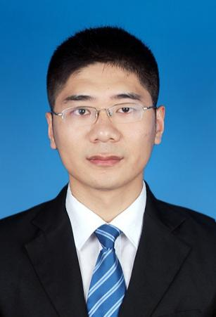

|
 |
Lecturer, Ph.D.
|
Chen Wang was born in Liaocheng, Shandong Province, China, in August 1990. He is currently a Lecturer at the School of Intelligent Engineering, Shaoxing University.
He received the B.Eng. degree from Chongqing University of Posts and Telecommunications in 2013, the M.Eng. degree in Control Science and Engineering from Chongqing University of Posts and Telecommunications in 2016, and the Ph.D. degree in Software Engineering from Chongqing University in 2023. Since November 2023, he has been with the School of Intelligent Engineering (formerly the School of Mechanical and Electrical Engineering), Shaoxing University.
His research interests include computer vision and deep learning, covering deep learning, semantic segmentation, object detection, knowledge distillation, and other computer vision tasks. He is currently focused on knowledge distillation methods for efficient 2D/3D scene perception (semantic segmentation and object detection).
He has participated in several research projects, including the National Key R&D Program of China, the National Natural Science Foundation of China, and the Chongqing Natural Science Foundation. He has published over 20 papers in SCI journals and CCF-recommended conferences and filed 3 national invention patents. He serves as a long-term reviewer for journals such as the Chinese Journal of Computers, Acta Electronica Sinica, Knowledge-Based Systems, Expert Systems with Applications, Neural Computing and Applications, and Applied Intelligence.
Prospective students: he warmly welcomes students interested in image processing, computer vision, natural language processing, and machine learning to contact him.
He has published over 20 papers in SCI journals and CCF-recommended conferences. Representative venues include the following (see the faculty page for the full list of papers):
Note: the official profile of the school lists representative journals and conferences; for the full publication list, please refer to the faculty page.
Journal reviewer (long-term reviewer for the following journals):
Projects (participant):
Note: specific project titles, grant numbers, and durations follow the official school website.
He teaches courses related to computer vision and deep learning.
Student competition mentoring: China Robotics and Artificial Intelligence Competition (4 national first prizes, etc.); the 11th China Collegiate Computing Contest (C4) — Team Programming Ladder Tournament.
Graduate recruitment: students interested in image processing, computer vision, natural language processing, and machine learning are warmly welcome to contact him at chenwang3024@163.com.